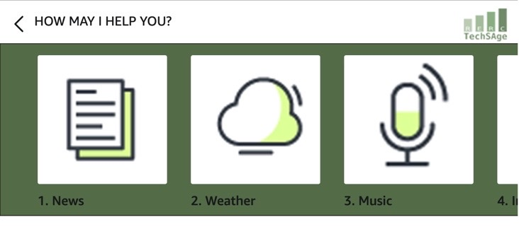
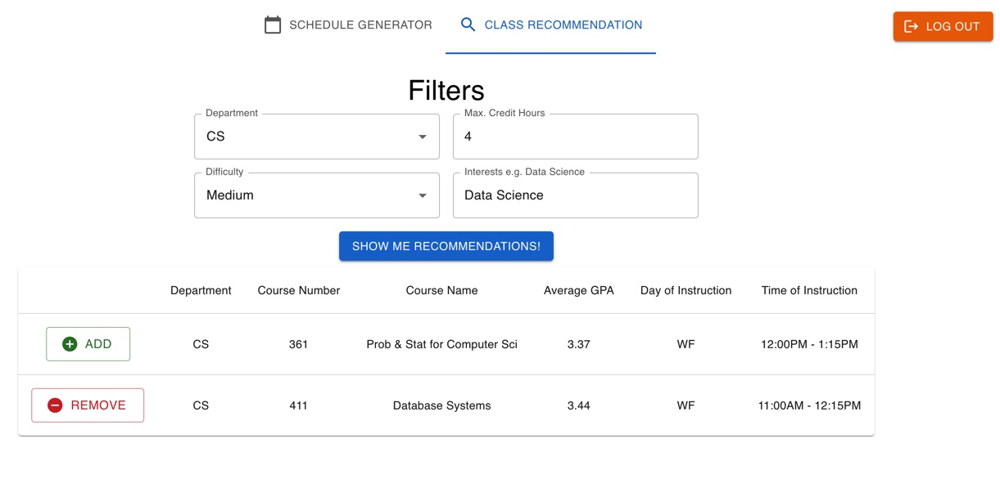
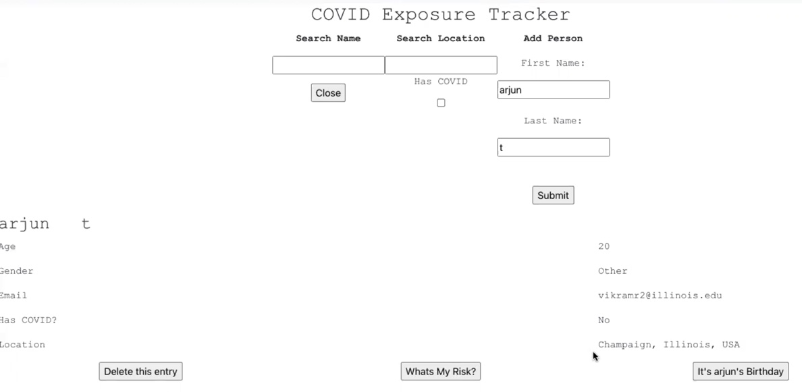

To see the majority of projects I have worked on, check out my Github!
https://github.com/vikramr2
This project is under the Human Factors and Aging Laboratory at the University of Illinois and TechSAge at Georgia Tech. I am currently working on an Alexa application that delivers instructional material and curation of other Alexa apps and functionalities to older adults and those living with mobility disabilities. The application follows heuristics such as recognition vs. recall, error handling, etc. so that those unfamiliar with technology can easily use this voice based app.
 Go to Project Page! View Source Code!Publication
I worked with two professors at the Rapid IoT (RIoT) Lab in the University of Illinois to develop a smart power outlet that charges when utility prices fall negative, and discharges otherwise. This smart power outlet thus saves money and tackles an issue in energy conservation. I designed algorithms to fetch real-time utility pricing and parse it into a readable format by a programmable Intel Edison.
Go to Project!Our group sought to answer an issue on user-friendliness with UIUC’s current self-service system. We optimized usability heuristics on different user flows. This app includes a feature for registering for required classes in the user’s major, as well as a feature for recommending classes based on difficulty calculated from historic GPA averages, and specified topic interests (e.g. Data Science).
 Go to Demo!Our group in our database Systems course built a web application for efficient logging of COVID tests. Entries could be used for contact tracing and estimation of likelihood of infection. COVID statistics for all recorded regions are displayed.
 Go to Project!In Progress
Cyclicity analysis is the technique of aggregating regional linear time series to map spread of a signal over a medium. Using American and Canadian provincial COVID case time series, spread is mapped across North America.